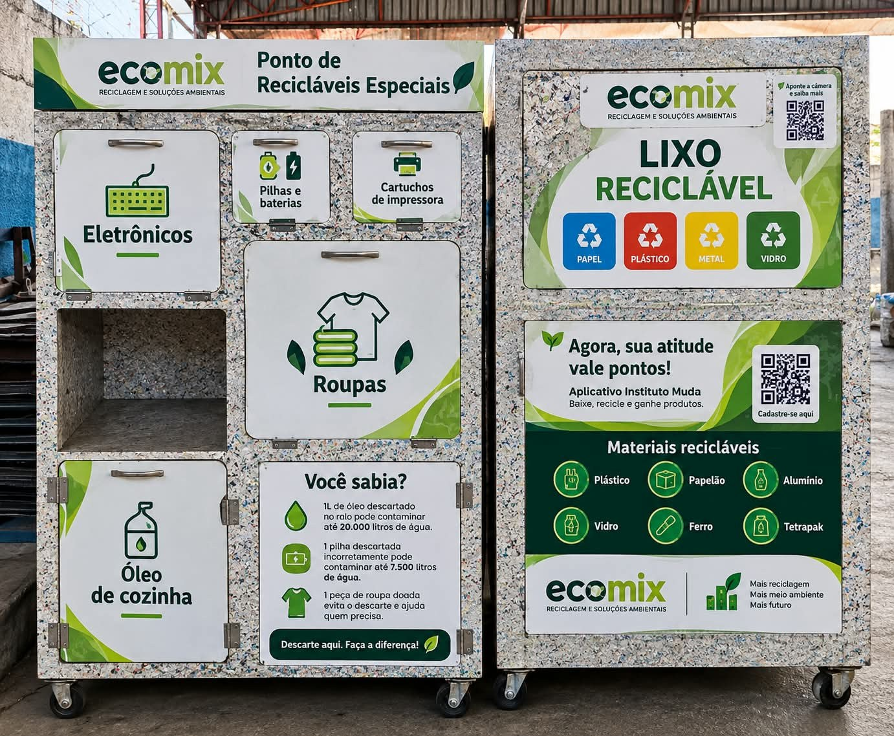
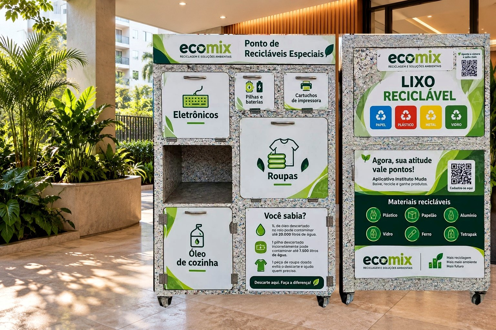

Coleta programadaConforme o planejamento da operação.
GESTÃO AMBIENTAL · COLETA · RECICLAGEM
Reciclagem organizada.
Impacto que transforma.
Coleta programada, triagem e destinação de materiais recicláveis com uma operação planejada para a realidade do seu condomínio ou empresa.
Operação pensada para o seu espaçoRotina, acesso e frequência definidos em conjunto.

Pontos de coleta EcoMixIdentificação clara para orientar o descarte.
COLETATRIAGEMDESTINAÇÃO
MENOS DESPERDÍCIO+MAIS CIRCULARIDADE
01 / UMA NOVA ROTINA PARA OS RESÍDUOSROLE PARA CONHECER ↓
Triagem e separaçãoMateriais organizados para aproveitamento.
Logística planejadaAcesso, equipe e frequência alinhados.
Destinação responsávelEncaminhamento conforme os materiais.
01 / A ECOMIX
Do ponto de coleta à destinação.
Do ponto de coleta à destinação.
Um ciclo melhor começa com organização.
A EcoMix estrutura a coleta e a gestão de materiais recicláveis para condomínios e empresas, respeitando a rotina e as condições de cada local.
Planejamos a operação desde a definição dos pontos de coleta até a retirada, o transporte, o recebimento, a triagem e o encaminhamento dos materiais na cadeia da reciclagem.
Veja como funciona ↗O OBJETIVOFacilitar o descarte correto sem complicar a rotina.
Cada proposta é estruturada a partir do espaço disponível, do volume estimado, dos materiais e da frequência necessária.
02 / NOSSAS SOLUÇÕESUma operação completa.
Uma operação completa.
Sem complicar o seu dia a dia.
A EcoMix combina planejamento e execução para tornar a gestão dos resíduos mais clara, organizada e adequada ao local.
01
Coleta e logística
Retirada programada com rota, equipe e frequência definidas para a operação.
Conhecer etapa ↗02
Triagem e separação
Organização dos materiais para melhorar o aproveitamento e preparar o encaminhamento.
Conhecer etapa ↗03
Reciclagem e destinação
Encaminhamento dos materiais conforme suas características e possibilidades de reaproveitamento.
Entender destinação ↗04
Educação ambiental
Orientação sobre separação e uso correto dos pontos de coleta, quando prevista na operação.
Ver solução para condomínios ↗05
Soluções sob medida
Planejamento de acordo com espaço, circulação, volume e particularidades do cliente.
Conversar sobre a operação ↗06
Rastreabilidade e documentação
Emissão de MTR e CDF quando aplicáveis à operação e à destinação realizada.
Sobre a documentação ↗
✦ SIMULAÇÃO ILUSTRATIVA GERADA COM IAImagem de referência para visualizar uma possibilidade de instalação. O modelo e o posicionamento são definidos após avaliação do local.
03 / CONDOMÍNIOS
Planejar uma solução para meu condomínio ↗
A reciclagem começa onde a rotina acontece.
Pontos de coleta bem identificados ajudam os moradores a entender o descarte e tornam a operação mais organizada para a administração.
✓
Pontos identificadosOrganização conforme os materiais que serão recebidos.
✓
Planejamento do acessoPosicionamento pensado para o espaço e a circulação.
✓
Coleta com veículo compactoUtilizamos veículos como a Hyundai HR, cujo porte pode facilitar o acesso e as manobras em muitos condomínios, conforme as condições do local.
04 / EMPRESAS
Resíduos bem geridos.
Resíduos bem geridos.
Uma operação mais previsível.
Para empresas, comércios e operações que precisam organizar a retirada dos recicláveis, a EcoMix planeja uma rotina compatível com o local, o volume e a necessidade de atendimento.
Fale sobre sua operação ↗UMA ROTINA ORGANIZADAE
01
Entendimento da operaçãoTipos de material, volume e acesso.
↗02
Planejamento logísticoEquipe, frequência e retirada.
↗03
Encaminhamento dos materiaisTriagem e destinação na cadeia da reciclagem.
↗COLETATRIAGEMDESTINAÇÃO
05 / MODELO DE PARCERIATransparência do começo
Transparência do começo
ao resultado da operação.
O modelo comercial separa os custos da operação do impacto positivo gerado pelo encaminhamento dos materiais.
01 LOGÍSTICA
Uma operação que funciona.
Cobramos um valor referente à logística do serviço, considerando deslocamento, equipe, coleta e estrutura operacional.
VALORES DEFINIDOS NA PROPOSTA02 IMPACTO SOCIAL
50%
Reciclagem com retorno social.
50% do valor obtido com os materiais coletados é destinado a cooperativas e ONGs, conforme o modelo de parceria da EcoMix.
VALOR COMPARTILHADO COM PROPÓSITO03 OPÇÃO DE TROCA
Produtos de limpeza.
Quando solicitado e previsto na proposta, podemos oferecer produtos de limpeza em troca das coletas, conforme as condições combinadas.
OPÇÃO MEDIANTE ALINHAMENTO06 / DOCUMENTAÇÃO
Mais clareza para acompanhar a destinação.
Quando aplicáveis à operação, os documentos ambientais ajudam a registrar a movimentação e comprovar a destinação dos resíduos.
Manifesto de Transporte de ResíduosRegistra e acompanha a movimentação dos resíduos, quando exigido.
↗Certificado de Destinação FinalComprova a destinação final conforme aplicabilidade e documentação da operação.
↗07 / COMO FUNCIONAUm processo claro.
Um processo claro.
Da avaliação ao acompanhamento.
Antes de iniciar, alinhamos as necessidades e as condições do local para montar uma operação adequada.
Diagnóstico
Entendemos o local, os materiais, o volume e a frequência desejada.
Planejamento
Definimos rotina, acesso, equipe e formato do ponto de coleta.
Operação
Realizamos as coletas e organizamos o fluxo dos materiais.
Acompanhamento
Ajustamos a rotina conforme a operação evolui e a necessidade do cliente.
DÚVIDAS FREQUENTES
O que vale saber antes de começar.
Os detalhes finais — como frequência, posicionamento e condições de atendimento — são definidos na proposta após entender a necessidade do local.
A EcoMix cobra pela coleta? +
Sim. A proposta prevê um valor para a logística e a operação do serviço, incluindo deslocamento, equipe, coleta e estrutura operacional.
Quais materiais podem ser coletados? +
Os materiais são avaliados conforme a operação. Entre os recicláveis comuns estão papel, papelão, plástico, metal e vidro. Outros materiais precisam ser alinhados previamente.
Produtos de limpeza podem fazer parte da parceria? +
Sim, quando solicitado e previsto na proposta. Essa opção é combinada conforme as condições da operação.
A EcoMix emite documentação ambiental? +
A EcoMix emite MTR e CDF quando aplicáveis à operação e à destinação realizada.
09 / FALE COM A ECOMIX
Vamos organizar uma solução para o seu espaço?
Conte um pouco sobre seu condomínio ou empresa. A partir dessas informações, podemos entender a necessidade e orientar os próximos passos para uma proposta.